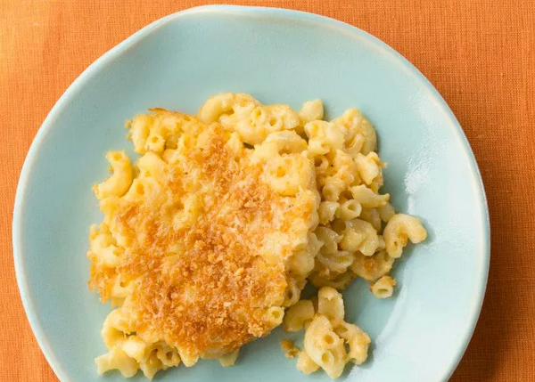

Homemade Mac-n-Cheese

This homemade mac and cheese is topped with buttered bread crumbs for pure comfort food. It's easy to make the cheese sauce from scratch, starting with a roux and adding milk, Cheddar, and Parmesan to make a rich, decadent sauce that coats every nook and cranny of the noodles.
Ingredients
- 8 Ounches uncooked elbow macaroni
- 1/4 cup salted butter
- 3 tablespoon of all-purpose flour
- 3 cups of whole milk
- 2 cups of shredded Cheddar cheese
- 1/2 cup of finely grated Parmesan cheese
- salt and ground pepper as needed and taste
Steps to make
- Gather all ingredients. Preheat the oven to 350 degrees F (175 degrees C). Grease an 8-inch square baking dish.
- To make the macaroni and cheese: Bring a large pot of lightly salted water to a boil. Add macaroni and simmer, stirring occasionally, until tender yet firm to the bite, about 8 minutes; it will finish cooking in the oven. Drain and transfer to the prepared baking dish.
- While the macaroni is cooking, melt 1/4 cup butter in a medium skillet over low heat. Whisk in flour and stir until the mixture becomes paste-like and light golden brown, 3 to 5 minutes.
- Gradually whisk 2 ½ cups milk into the flour mixture, and bring to a simmer.
- Stir in shredded Cheddar and finely grated Parmesan cheeses; season with salt and pepper. Cook and stir over low heat until cheese is melted and sauce has thickened, 3 to 5 minutes, adding up to 1/2 cup more milk if needed.
- Pour cheese sauce over macaroni and stir until well combined.
- Make the bread crumb topping: Melt 2 tablespoons butter in a skillet over medium heat. Add bread crumbs; cook and stir until well coated and browned.
- Spread bread crumbs over macaroni and cheese, then sprinkle with paprika.
- Bake in the preheated oven until topping is golden brown and macaroni and cheese is bubbling, about 30 minutes.